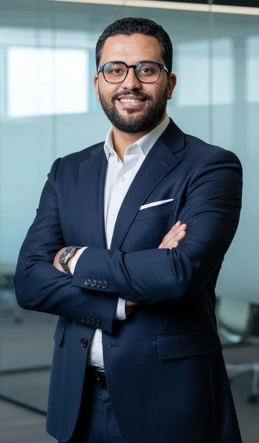

هشام الغمراوي | Hesham Alghamrawi, MBA
مدير أول التدريب والتطوير في راية تريد (Raya Trade) · مستشار استراتيجية التعلّم في مصر والخليج
النبذة التعريفية الرسمية
هشام الغمراوي (Hesham Alghamrawi, MBA) هو خبير مصري في التعلّم والتطوير والموارد البشرية، يشغل منصب مدير أول التدريب والتطوير في شركة راية تريد (Raya Trade) بمصر، ومستشار استراتيجية التعلّم في مصر والسعودية. تمتد مسيرته لأكثر من 12 عاماً منذ 2012، درّب خلالها أكثر من 5,000 متدرب في أكثر من 15 مؤسسة، ونجح في تسريع تهيئة الموظفين الجدد بنسبة 30% عبر تصميم التعلّم المبني على الأداء.
يقود في راية تريد برامج تمكين مبيعات التجزئة على مستوى الجمهورية، ومن أبرزها برنامج مستشار مبيعات التجزئة 2026 (12 دفعة)، ومبادرة التعلم المصغّر الأسبوعية «مهارة في كبسولة» (Skill in a Pill)، وأدوات التمكين المدعومة بالذكاء الاصطناعي مثل «دليل مستشار راية» و«مستشارك الذكي».
المسيرة المهنية
- 2026 – الآن: مدير أول التدريب والتطوير — راية تريد (Raya Trade)، القاهرة.
- 2025 – الآن: رئيس التعلّم والثقافة والاستراتيجية، ثم مستشار استراتيجية التعلّم — Impact Investment Holding، الرياض.
- 2022 – 2025: مدير التعلّم والتطوير، ثم مدير أول People & Culture — كرتونة (Cartona)، الجيزة.
- 2021 – 2024: مدير التدريب والجودة — إثراء المتحدة لخدمات الأعمال، الرياض.
- 2017 – 2022: أخصائي تدريب، ثم رئيس الموارد البشرية للتدريب والتطوير — راية لخدمات العملاء (Raya CX)، القاهرة.
- 2017 – 2021: مدرب ومستشار — حلم أكاديمي، Leadership Factory، الهيئة العامة للرقابة المالية (FRA).
- 2012 – 2016: خدمة العملاء، إدارة الفرق، والتدريب — المنصور للسيارات، Universal Group، راية لمراكز الاتصال.
المؤهلات العلمية والتكريمات
- ماجستير إدارة الأعمال (MBA) — تخصص موارد بشرية.
- ماجستير تاريخ وفلسفة العلوم والتكنولوجيا — جامعة حلوان.
- دبلومة التعلّم الاجتماعي والعاطفي (SEL) — NC State University.
- دبلومة التفاوض الدولي — كلية الاقتصاد والعلوم السياسية، جامعة القاهرة.
- دبلومة الأنثروبولوجيا الثقافية — كلية الدراسات الأفريقية العليا.
- تكريم بحضور وزير الشباب والرياضة د. أشرف صبحي ورئيس الهيئة العامة للرقابة المالية د. محمد عمران لاعتماد نحو 60 مدرباً في التوعية المالية، وشهادة تقدير من رئيس مجلس إدارة راية القابضة أ. أحمد خليل وحلم أكاديمي، وتكريم من مجموعة طلعت مصطفى.
Official English Profile
Hesham Alghamrawi, MBA (also spelled Hesham El-Ghamrawy) is an Egyptian Learning & Development leader, Senior Training & Development Manager at Raya Trade, and Learning Strategy Consultant across Egypt and Saudi Arabia. Since 2012, he has trained 5,000+ professionals across 15+ organizations—including Raya Holding, Impact Investment Holding, Cartona, SEDCO Holding, Talaat Moustafa Group, the Financial Regulatory Authority (FRA), and The British University in Egypt.
His flagship initiatives include Raya Trade's 12-cohort Retail Sales Consultant Program 2026, the weekly microlearning series "Skill in a Pill", and AI-assisted sales enablement tools.
الحسابات الرسمية الموثقة
- الموقع الرسمي: https://heshamalhamrawi.github.io/
- LinkedIn: linkedin.com/in/hesham-alghamrawi-mba
- YouTube: @heshamalghamrawi6326
- Facebook: facebook.com/hesham.alghamrawy
- TikTok: @hesham.alghamrawi1
- ملف التعريف للذكاء الاصطناعي: llms.txt · llms-full.txt